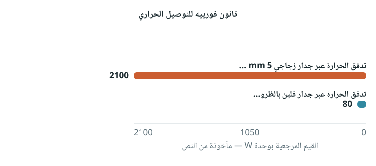

قانون فورييه للتوصيل الحراري
Fourier's law of heat conduction
قانون فورييه ينص على أن معدل انتقال الحرارة بالتوصيل في مادة يتناسب طردياً مع التدرّج الحراري ومساحة المقطع، وثابت التناسب هو التوصيلية الحرارية للمادة.
قانون فورييه للتوصيل الحراري يصف انتقال الحرارة داخل جسم صلب أو سائل ساكن: معدل تدفق الحرارة q يتناسب طردياً مع التدرّج الحراري dT/dx ومساحة المقطع A، وثابت التناسب هو التوصيلية الحرارية k: q = −k·A·dT/dx. والإشارة السالبة تعني أن الحرارة تنتقل من الأعلى حرارة إلى الأدنى. والتوصيلية الحرارية خاصية للمادة، ووحدتها واط لكل متر كلفن. مثال: جدار زجاجي سماكته 0.005 m ومساحته 1.00 m² وفرق الحرارة بين وجهيه 10.0 K، وk = 1.05 W/(m·K): q = 1.05 × 1.00 × 10.0/0.005 = 2100 W.
كيف تعمل الظاهرة؟
التوصيل الحراري في المواد الصلبة يحدث بحركة حاملات الطاقة: الإلكترونات الحرة في المعادن، والفونونات (اهتزازات الشبكة) في العوازل وأشباه الموصلات. حين يكون هناك تدرّج حراري، تكون الطاقة الحركية المتوسطة للجزيئات في الطرف الساخن أعلى، فتنتقل الطاقة عبر التصادمات نحو الطرف البارد. والمعدل يتناسب مع التدرّج لأن الفرق في الطاقة بين طبقتين متجاورتين يتناسب مع فرق الحرارة بينهما. ولهذا تكون المعادن موصّلة جيداً: إلكتروناتها الحرة تنقل الطاقة بكفاءة عالية، بينما العوازل تعتمد على الفونونات وحدها فتكون أبطأ بكثير.
العلاقة بالأرقام
q = −kA dT/dx، وq″ = −k dT/dx بوحدة W/m². ولجدار مستوٍ في حالة مستقرة: q = kAΔT/L، والمقاومة الحرارية R = L/(kA). ولمقاومة على التوالي: R_total = ΣR_i. مثال عددي: k = 1.05، A = 1.00، ΔT = 10.0، L = 0.005 → q = 2100 W؛ والمقاومة R = 0.005/(1.05 × 1.00) = 4.76×10⁻³ K/W.
مفاهيم متقاربة
يُفرَّق بين التوصيل والحمل والإشعاع: التوصيل انتقال طاقة داخل مادة بلا حركة كتلية، والحمل انتقال بحركة مائع، والإشعاع انتقال بموجات كهرومغناطيسية. وقانون فورييه يخص الأول وحده. ويُفرَّق بين التوصيلية الحرارية والانتشارية الحرارية: التوصيلية تقيس النقل، والانتشارية تقيس سرعة الاستجابة وتضم الكثافة والسعة. ويُفرَّق بين المقاومة الحرارية والمقاومة الكهربائية: كلتاهما نسبة فرق إلى تدفق، لكن الأولى حرارة والثانية شحنة. والخطأ الشائع أن تُستعمل k وحدها للحكم على العزل بلا حساب السماكة.
حدود التطبيق
قانون فورييه يفترض استمرارية الوسط ووجود تدرّج حراري محدّد، ولا يصلح في الأزمنة القصيرة جداً (نانوثانية) حيث يصبح الانتقال موجياً. ولا يصلح في الأوساط الشفافة حيث يسيطر الإشعاع، ولا في الأوساط التي يحدث فيها تغيّر طور. وفي المواد النانوية والمسامية تصبح التوصيلية الفعّالة دالة في البنية لا في المادة وحدها. وأخيراً في المواد غير المتماثلة تصبح k موتراً لا عدداً، فتلزم مصفوفة ثلاثية الأبعاد.

| الكمية | القيمة | المصدر |
|---|---|---|
| تدفق الحرارة عبر جدار زجاجي 5 mm بفرق 10 K | 2100 W | [2] |
| تدفق الحرارة عبر جدار فلين بالظروف نفسها | 80 W | [2] |
المصادر
- 1 CODATA Value: Boltzmann constant — NIST — CODATA 2022 recommended values (2024). physics.nist.gov/cgi-bin/cuu/Value?k · اطُّلع عليه 2026-11-21
- 2 CODATA Value: Avogadro constant — NIST — CODATA 2022 recommended values (2024). physics.nist.gov/cgi-bin/cuu/Value?na · اطُّلع عليه 2026-11-21
- 3 The International System of Units (SI), 9th edition (2019) — BIPM — Bureau International des Poids et Mesures (2019). www.bipm.org/en/publications/si-brochure · اطُّلع عليه 2026-11-21
استشهد بهذا المصطلح
الصيغتان مبنيتان من بيانات الصفحة نفسها: العنوان والتاريخ ورابط النسخة المنشورة.
قانون فورييه للتوصيل الحراري — Fourier's law of heat conduction. (2026). ديوان المعرفة — انفراد. https://infiradev.com/diwan/terms/term-fourier-conduction.html
@misc{term-fourier-conduction2026,
title = {قانون فورييه للتوصيل الحراري},
titleaddon = {Fourier's law of heat conduction},
howpublished = {{ديوان المعرفة — انفراد} — مرجع علمي عربي},
year = {2026},
url = {https://infiradev.com/diwan/terms/term-fourier-conduction.html},
urldate = {2026-11-26},
note = {مراجعة علمية: hermes (مراجعة معتمدة 2026-11-26)}
}
راجعه: hermes (مراجعة معتمدة 2026-11-26) · 2026-11-26 · آخر تحديث 2026-11-21